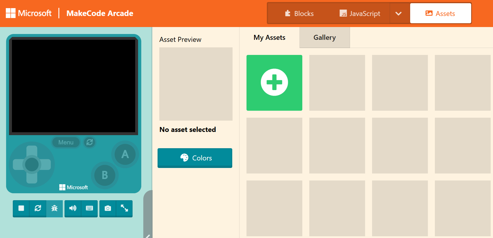
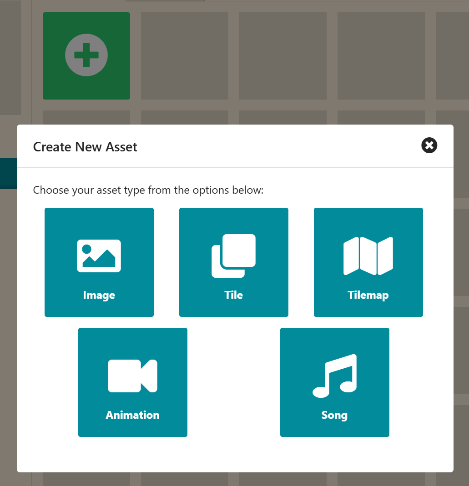
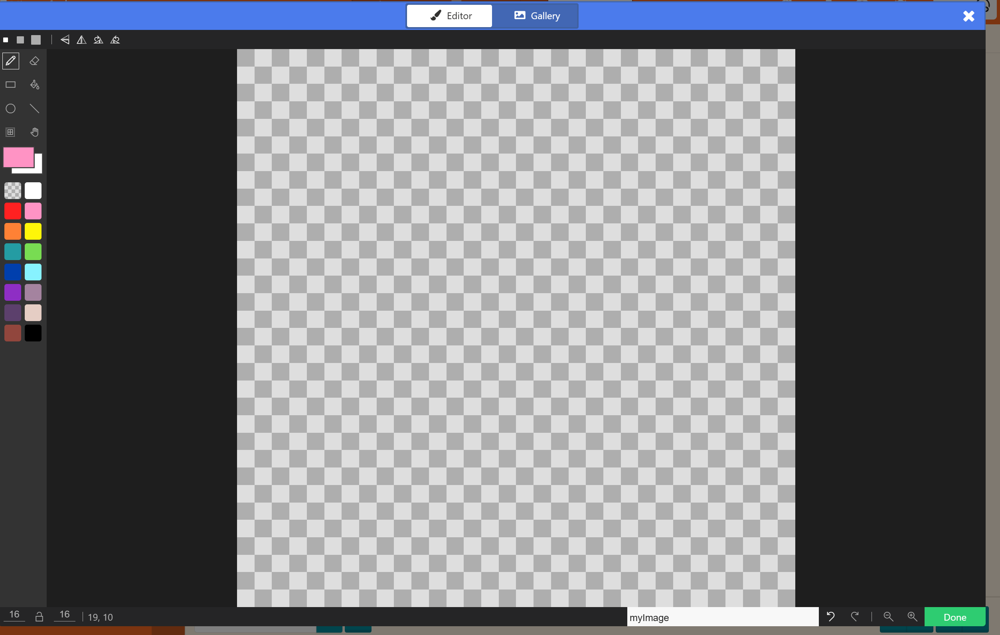
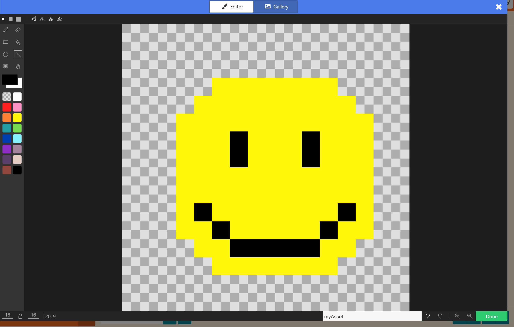
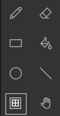
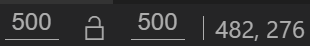
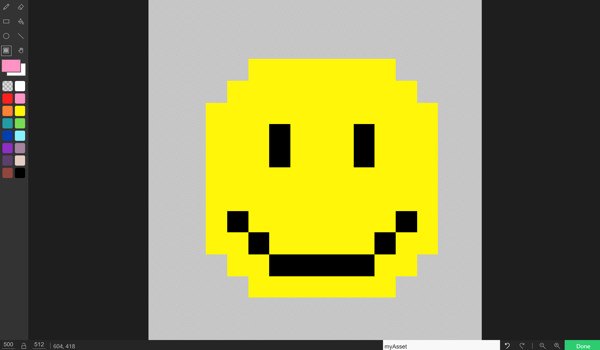
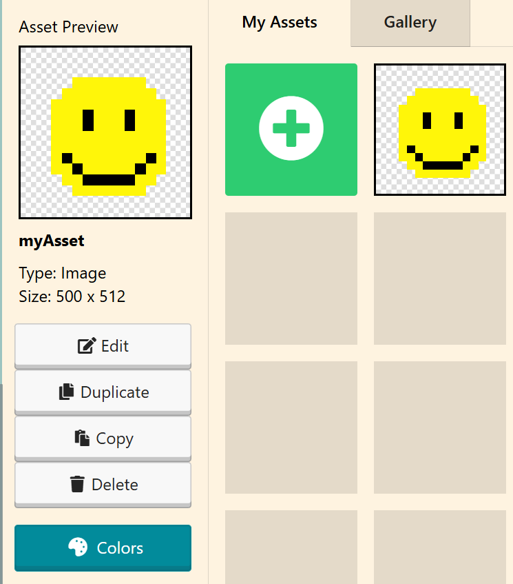

Welcome! Before we get into the real work of this course, let's do something fun: you're going to design a small pixel-art avatar for yourself using MakeCode Arcade, a free browser-based tool. This is the same tool some of you may use later this year to build real games, but today it's just for making something that's you.
Go to arcade.makecode.com and start a new project. Then follow the steps below in order.
In the top right of the editor, click Assets (next to Blocks and JavaScript).

Click the green + tile.

Click Image. This opens the image editor with a small blank canvas, ready for you to draw on.

Use the pencil, fill, rectangle, circle, and line tools on the left to draw your avatar. Pick colors from the palette below the tools.
Draw at this small size first. Don't try to make it big yet, that comes next.

If you're going to make a mistake, lift your finger off the mouse instead of dragging through it. A short accidental drag only takes away a little, and small mistakes are easy to clean up. A long dragged mistake takes a lot more work to fix.
Watch this MakeCode Arcade image editor walkthrough to see someone draw a sprite from a blank canvas, start to finish.
In the toolbar on the left, click the marquee (selection) tool. It's the grid-shaped icon next to the hand tool.

At the bottom left of the editor, you'll see two number fields (width and height). Type 500 into both.
500 by 500 is the largest size MakeCode Arcade allows, so this is as big as your avatar can get.

Your drawing doesn't get bigger yet. The canvas around it does. Your small drawing will now be sitting in the corner of a much bigger space. That's expected, the next step fixes it.
Using the marquee tool, drag a selection box around your small drawing, corner to corner. Then click and drag the corner of that selection box out to the bottom right corner of the larger canvas. This stretches your drawing to fill the full 500 by 500 space.

It doesn't need to be a perfect square when you're done. Getting close is completely fine.
Click Done to close the image editor. Back in the Assets panel, right-click directly on your image's thumbnail and choose Save image as from the menu that pops up.

Your browser will ask where to save the file and what to name it. Type this as the filename:
avatar
All lowercase, exactly that spelling. Don't type an ending after it, the program adds .bmp automatically, so it will be saved as avatar.bmp in your folder. Save it directly in this Kickoff folder, the same folder this page is in. Don't create a new folder for it and don't rename it to anything else.
MakeCode Arcade's default palette has 16 colors, but you can pick a different built-in palette or build your own.
If you change the palette after you've already started drawing, some colors in your art may shift. That's normal. Just touch up anything that looks off before you move on to Step 5 above.
avatar.bmp is saved in this folder before you move on.